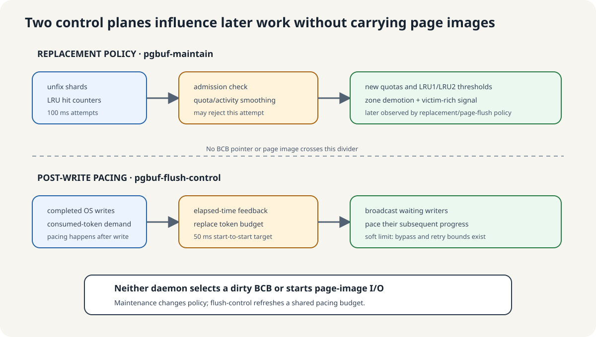

왜 quota를 조정하고 writer의 속도를 조절하는가?
Maintenance는 접근 활동에 따라 replacement quota와 zone 경계를 주기적으로 조정할 기회를 제공한다. 이 timer가 없으면 해당 조정 기회가 사라지지만, quota 조정을 호출하는 다른 경로는 남아 있다. 이 daemon이 page image를 쓰지는 않는다. Timer가 실행돼도 조정 조건을 통과하지 못할 수 있다.
Flush-control은 page 단위 credit의 공용 잔액을 주기적으로 교체한다. 참여하는 writer는 OS write에 성공한 뒤 credit을 소비하면서 기다릴 수 있다. 이 공급자가 없을 때의 영향은 활성 pacing 경로와 writer에 달려 있다. 모든 write를 금지하는 것과 같지 않다. Credit은 soft pacing 수단이며 write 이전 허가나 엄격한 I/O 상한이 아니다.
예: 주로 일하던 session이 바뀐다. Maintenance는 진입 조건을 만족하면 quota 정책을 조정할 수 있다. 이와 별개로 이미 page를 쓴 writer가 pacing credit을 기다릴 수 있다. 어느 사건도 이 두 daemon thread가 page를 썼다는 뜻은 아니다.
Maintenance: 정책 갱신의 호출 경로
pgbuf_page_maintenance_execute
→ pgbuf_adjust_quotas
→ pgbuf_lru_adjust_zones소스 위치 펼치기
고정 소스: page_buffer.c:16997–17008 · page_buffer.c:14260–14511
Boot gate와 quota 조정 진입 조건이 적용된다. 형제 호출인 pgbuf_direct_victims_maintenance는 의도된 backup이지만 이 리비전에서는 두 loop가 작성된 조건상 본문에 진입하지 않는다(VS-20). 주석의 의도를 실행 사실로 바꾸거나, 이것만으로 운영 환경의 starvation을 단정하면 안 된다.
Flush-control: 적응형 credit 공급 경로
pgbuf_flush_control_daemon_task::execute
→ fileio_flush_control_add_tokens
→ fileio_flush_control_get_desired_rate
→ pgbuf_flush_control_from_dirty_ratio소스 위치 펼치기
첫 실행은 시간만 초기화한다. 나머지 경로는 token bucket과 adaptive control이 있을 때이며, 설정된 고정 속도 제어는 다른 분기다. 불확실성 기록.
교체 정책 조정과 쓰기 속도 조절

두 lane 사이로 BCB pointer가 이동하지 않습니다. Maintenance는 replacement sample을 소비하여 quota/zone policy를 publish합니다. Flush-control은 elapsed-time과 write-demand 통계를 사용해 shared token budget을 교체하고 post-write waiter를 깨웁니다.
Maintenance는 quota와 zone을 조정한다
100 ms 주기로 조정을 시도하지만 시간·활동량 조건을 통과한 경우에만 갱신합니다. Page copy나 WAL force, file I/O는 하지 않습니다. Direct-victim 보조 경로의 제한은 아래 소스 참고에 남겨 두었습니다.
세부 동작과 소스 펼치기
task는 fixed 100 ms start-to-start target을 가지며 ordinary explicit wake가 없습니다. gate-open pass마다 pgbuf_adjust_quotas()를 호출한 뒤 intended low-activity backup인 pgbuf_direct_victims_maintenance()를 호출합니다.
private quota disabled, 다른 adjustment active, elapsed time 1 ms 미만, 또는 activity가 B/4 아래이면서 500 ms 미만이면 quota adjustment가 early return합니다. accepted pass만 unfix shard를 reset하고 adjust_age를 증가시키며 LRU hit counter를 소비하고 activity smoothing, quota 계산, zone threshold 변경, 초과 zone demotion을 합니다.
B=32,768이면 high-activity threshold는 counted final unfix 8,192개입니다. accepted pass에서 81개 미만이면 low-activity case입니다. low activity에서는 scheduling을 제외하면 500 ms 이후 첫 100 ms attempt 정도에 executable guard가 통과합니다.
normal timing/activity check 비용은 O(T), accepted adjustment는 O(T + L + D)에 LRU mutex wait가 더해집니다. page copy, WAL force, file I/O는 하지 않습니다.
소스 참고: 보조 경로와 주석의 한계
이 리비전의 maintenance 보조 경로가 direct victim을 공급한다고 보장할 수는 없습니다. 다른 공급 경로는 남아 있습니다.
세부 동작과 소스 펼치기
index를 start_index로 초기화한 직후 index != start_index를 요구합니다. 현재 코드 그대로라면 body에 들어가지 않습니다. 다른 victim producer가 있으므로 이것만으로 runtime starvation을 증명하지는 않습니다.쓴 페이지 수만큼 credit을 소비한다
bucket은 file writer가 공유하는 mutex-protected 정수 잔액입니다. FILEIO_WRITE_DEFAULT_WRITE path에서는 OS write가 성공한 뒤 fileio_compensate_flush()가 write한 page 수만큼 token을 요청합니다. 잔액이 있으면 바로 차감하고, 부족한 일반 writer는 다음 condition broadcast를 기다릴 수 있습니다. 세고 있는 write는 이미 끝났으므로 token은 그 write를 허가하는 것이 아니라 이후 진행 속도를 조절합니다.
약 50 ms마다 daemon이 새 credit 잔액으로 교체하고 대기 중인 writer를 깨웁니다. 이전 잔액에 계속 더해 쌓는 방식이 아닙니다. 이 속도 조절에는 우회 경로가 있으므로 엄격한 I/O 상한은 아닙니다.
초기화·credit 갱신·속도 계산
초기화는 token 0개와 condition variable을 가진 bucket을 만듭니다. 실패하면 이 daemon이 없고 token acquisition은 no-op이 되지만 page flushing은 계속 동작합니다. 첫 gate-open task pass는 time origin만 기록합니다. 이후 pass가 elapsed time을 측정하여 첫 interval allowance를 만듭니다.
약 50 ms마다 daemon이 공유 allowance를 교체합니다
- token bucket을 lock합니다.
- consumed-token과 page-write 통계를 읽고 clear합니다.
- adaptive 또는 configured interval budget을 계산합니다.
- 새 budget을 이전 balance에 더하지 않고
tokens를 교체합니다. - interval 통계를 reset하고 condition variable을 broadcast합니다.
16 KiB/page에서 adaptive 40 MiB/s floor는 2,560 page/s, 50 ms마다 약 128 token입니다. non-adaptive internal 10,000-page/s 기본값은 50 ms마다 약 500 token입니다. 실제 값은 elapsed time, integer truncation, feedback에 따라 달라집니다.
Credit은 엄격한 I/O 상한이 아니다
Credit은 성공한 OS write 뒤에 소비합니다. 참여하지 않는 write 경로와 기다리지 않는 호출자가 있으므로, 모든 write를 허가하는 장치나 엄격한 처리량 제한으로 해석하면 안 됩니다.
세부 동작과 소스 펼치기
fileio_write()와 fileio_write_pages()는 default compensated mode에서만 successful OS write 뒤 fileio_compensate_flush()를 호출합니다. FILEIO_WRITE_NO_COMPENSATE_WRITE는 bucket을 건너뛰며 DWB 관련 write path가 이 mode를 선택할 수 있습니다. 참여하는 normal caller는 budget을 기다릴 수 있지만 최대 열 번 broadcast/retry 뒤 진행합니다. log critical section을 가진 caller는 demand를 account하되 missing token을 기다리지 않습니다.
따라서 correctness authorization이나 strict throughput ceiling이 아니라 soft pacing입니다. CPU accounting은 O(1)이고 condition broadcast와 awakened waiter scheduling 비용은 waiter 수에 따라 커집니다.
WAL·checkpoint·DWB도 각자 역할이 있다
Log flush는 WAL을, checkpoint는 복구에 필요한 기록 진행을 담당합니다. Foreground flush와 DWB 경로도 별도로 존재합니다. 이들을 네 page-buffer daemon과 같은 작업으로 묶지 않습니다.
세부 동작과 소스 펼치기
log-checkpoint는 기본 360초인 자체 configurable timer를 가지며 oldest_unflush_lsa로 data page를 선택합니다. log-flush는 WAL을 위해 append-log page를 durable하게 만듭니다. Foreground/WRITE-owner path는 data-page generation을 copy할 수 있습니다. DWB helper daemon은 stable image가 DWB seam을 넘은 뒤 downstream에서 동작합니다. 어느 것도 maintenance나 token-control lane에 속하지 않습니다.
Timer가 깨어났지만 유효한 작업은 없는 경우
Maintenance wake만으로 quota epoch가 바뀌었다고 할 수 있을까요? Flush-control wake는 page write가 있었다는 증거일까요?
설명 펼치기
Wake만으로는 둘 다 알 수 없습니다. Maintenance는 quota epoch를 받아들이기 전에 실행 조건을 확인합니다. Flush-control은 pacing credit을 갱신하고, file writer가 OS write 성공 뒤 그 credit을 소비합니다. Scheduling, 정책 갱신, page I/O는 서로 다른 사건입니다.